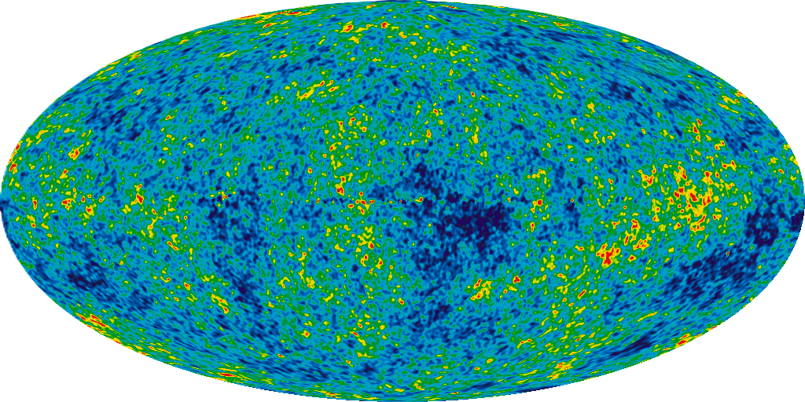
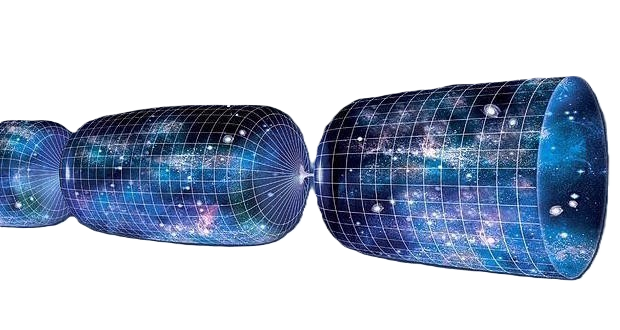

THE BIG BANG

„The origin, evolution, and nature of the universe have fascinated and confounded humankind for centuries. New ideas and major discoveries made during the 20th century transformed cosmology, the term for the way we conceptualize and study the universe, although much remains unknown.“ NASA

About 13.8 billion years ago, the universe underwent an extremely rapid expansion known as cosmic inflation, during which space itself expanded faster than the speed of light. Scientists are still unsure what existed before inflation or what powered it, but the energy driving this process may have been part of the very fabric of space-time. Inflation helps explain essential features of today’s universe—its large-scale flatness, uniformity, and the way tiny quantum fluctuations were stretched into the initial density variations that later grew into galaxies and cosmic structures.
When inflation ended, its driving energy transformed into matter and radiation—marking the beginning of the Big Bang. About one second after this event, the universe was incredibly hot, around 10 billion °C (18 billion °F), forming a dense “primordial soup” of particles and light. In the minutes that followed, during a period called nucleosynthesis, protons and neutrons collided to form the first elements: hydrogen, helium, and trace amounts of lithium and beryllium. After roughly five minutes, most of today’s helium had formed, and the universe had cooled enough for further element formation to stop. However, it remained far too hot for atomic nuclei to capture electrons, leaving the cosmos filled with a dense fog of free electrons that scattered light and made the universe opaque.
The Big Bang theory describes how the universe expanded from an initial state of extremely high density and temperature. Cosmological models based on this theory successfully explain phenomena such as the abundance of light elements, the cosmic microwave background (CMB) radiation, and the universe’s large-scale structure. The horizon and flatness problems are addressed by cosmic inflation. Precise measurements of the universe’s expansion rate place its age at 13.787 ± 0.02 billion years. Yet no widely accepted physical theory currently describes the earliest instants of the Big Bang.
As the universe expanded, it cooled, allowing subatomic particles—and eventually atoms—to form. These primordial elements, mostly hydrogen with some helium and trace lithium, later clumped together under gravity with the help of dark matter, forming the first stars and galaxies. Observations of distant supernovae show that the expansion of the universe is accelerating, a discovery attributed to dark energy.
The concept of an expanding universe was introduced in 1922 by Alexander Friedmann, who derived the equations describing cosmic expansion. Independently, Edwin Hubble observed in 1929 that galaxies are moving away from us at speeds proportional to their distance. In 1931, Georges Lemaître proposed that the universe originated from a “primeval atom,” introducing the modern idea of the Big Bang. The discovery of the CMB in 1964, and subsequent measurements confirming its uniformity, strongly supported the Big Bang model. By the late 1960s, the competing steady-state model had been largely abandoned.
Despite its success, the Big Bang model still faces open questions, including the matter–antimatter asymmetry, the true nature of dark matter, and the origin of dark energy.

Scientists used nine years of data from NASA’s Wilkinson Microwave Anisotropy Probe to create this detailed, all-sky image of the cosmic microwave background. The image reveals 13.8-billion-year-old temperature fluctuations (shown as different colors) – seeds that grew into the galaxies we see today.
Do you rack your brains over these things?
💥Did the Big Bang happen even though time didn’t exist yet?
Yes — time came into existence together with space.
- The Big Bang is not an explosion in time.
- It is the zero moment — the birth of time itself.
- There is no “before,” because time had not yet begun to flow.
- In other words: “Time began with the first tick of the universe’s clock.” Before that, there was nothing that could measure time — because time itself didn’t exist.
🌀 “Did space suddenly expand after a tiny fraction of a second?”
Yes — this is the inflationary phase.
- Around 10-35 seconds after space appeared, cosmic inflation began.
- In an incredibly brief moment, space expanded far more than during the entire rest of cosmic history.
- It wasn’t an explosion like dynamite — it was the expansion of space itself, everywhere at once.
- Think of it as the universe being “super-inflated,” not particles exploding into empty space.
⚛️ “And particles formed only afterward?”
Correct — matter appeared after inflation.
- When inflation ended (around 10-32 seconds), space began to heat up — this period is called reheating.
- The energy of space transformed into particles: quarks, gluons, electrons…
- These formed the first elemental soup — the quark–gluon plasma.
🌌 “Once particles formed, did they expand along with space?”
Exactly.
- The particles didn’t shoot outward — they existed inside the expanding space and stretched with it.
- Matter formed within a universe that was already rapidly growing.
- Over time, atoms, stars, and galaxies formed — everything “floats” in a space that keeps growing.
🧠 Conclusion
“In one moment, space and time came into existence. Immediately after (within a fraction of a second), the universe underwent inflation, a phase where space itself expanded extremely rapidly. Afterward, energy transformed into matter — and that matter has been expanding together with space ever since.”
What was before the Big Bang?
Short answer:
❗ According to modern physics, nothing at all — neither time nor space. The Big Bang was the beginning of time itself.
Longer answer:
There are hypotheses about what might have existed “before,” but we currently have no experiments to confirm or reject them.
🧪 Standard cosmology — time begins at the Big Bang
- According to Einstein, time is part of space — a unified spacetime.
- If space appeared at the Big Bang, time appeared with it.
- Therefore, asking “before” is not physically meaningful.
- It’s like asking what is north of the North Pole.
🌀 Cyclic universe / Big Bounce theory
- The universe may repeatedly expand and collapse.
- Before our Big Bang, a previous universe may have collapsed.
- After this “big crunch,” a new Big Bang occurred.
- Some versions say this cycle can continue forever.
- 🔁 Bang → expansion → collapse → bang → ...
🌌 Multiverse / Quantum fluctuation / Vacuum models
- In some models, our universe emerged from a quantum fluctuation in a “vacuum state.”
- There could be infinitely many universes, each with different physical laws.
- Our universe is just one bubble among countless others.
🧊 Eternal inflation
- Inflation (rapid expansion of space) may run endlessly.
- In different regions, it stops at different times, creating new universes.
- New universes are constantly being born — like bubbles in an infinite foam.
- Our universe is just one bubble.

Cyclic universe concept